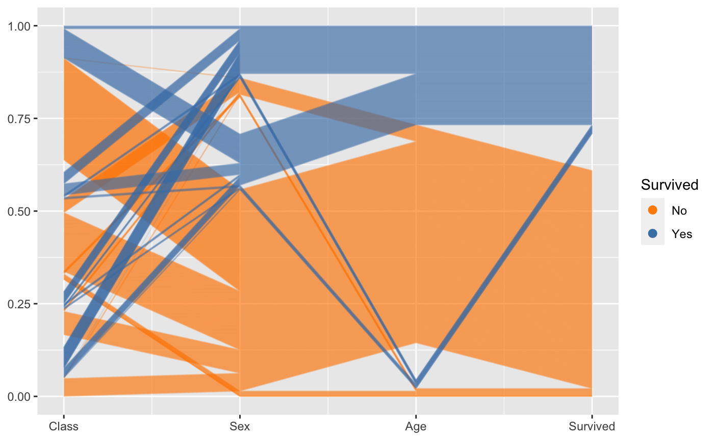
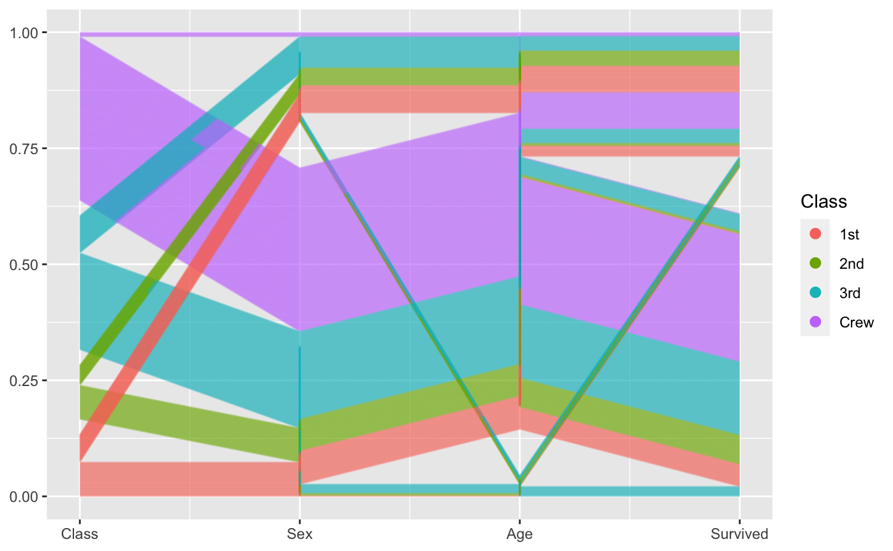

R package for creating parallel coordinate plots in the ggplot2 framework
# [](https://cran.r-project.org/package=ggpcp) [](http://www.r-pkg.org/pkg/ggpcp)
# [](https://travis-ci.org/yaweige/ggpcp)ggpcp is currently only available in the development version from Github:
Getting Started
Load the library
Load a dataset
A first parallel coordinate plot
Drawing a parallel coordinate plot in ggpcp consists of a three-step process:
-
First we need to collect all of the variables from the data set that should go into the parallel coordinate plot. We use the function
gather_pcpfor it.gather_pcphas two main arguments: the first one is the data, the second is a specification of all of the variables you want to include in the parallel coordinate plot. You can specify variables by- position, e.g.
1:4, 7, 5, 4, - name, e.g.
class,age,sex,aede1:aede3or - selector, e.g.
starts_with("aede"), see?tidyselect:: select_helpers
- position, e.g.
Second, we choose a transformation. This …
Third, we are ready to plot:
geom_pcpis a layer that draws lines for each observation of a parallel coordinate plot. We can use additional mappings such as colour, linetype or size of the lines.

flea %>%
ggplot(aes(colour = species)) +
geom_pcp2(aes(vars = vars(starts_with("aede"), 1:4, 6)),
method = "uniminmax")
flea %>%
gather_pcp(1:7, 6, 3) %>%
transform_pcp(method="uniminmax") %>%
ggplot(aes(id = id, name = name, value = value, level = level, class = class)) +
geom_pcp(aes(colour=species, size = species), alpha = 0.5) +
scale_size_manual(values=c(0.5, 0.65, 0.8))
flea %>%
mutate(species = factor(species, levels = c("Heptapot.", "Concinna", "Heikert."))) %>%
gather_pcp(1:7) %>%
transform_pcp(method="uniminmax") %>%
ggplot(aes(id = id, name = name, value = value, level = level, class = class)) +
geom_pcp_box(boxwidth = 0.1, fill="grey50") +
geom_pcp(aes(colour=species), boxwidth = 0.1) 
flea %>%
mutate(species = factor(species, levels = c("Heptapot.", "Concinna", "Heikert."))) %>%
ggplot(aes(vars = vars(1:7))) +
geom_pcp_box2(boxwidth = 0.1, fill="grey80") +
geom_pcp2(aes(colour=species), boxwidth = 0.1) 
ggpcp deals with categorical variables by using the space on the y axis of a categorical variable to spread points out evenly. This allows us to track individual points through the parallel coordinate plot even in the presence of categorical variables.
Another look at the Titanic Data
For categorical variables ggpcp presents a result similar to parsets by Kosara et al (2013).
titanic <- as.data.frame(Titanic)
titanic <- titanic %>%
purrr::map(.f = function(x) rep(x, titanic$Freq)) %>%
as.data.frame() %>% select(-Freq)
titanic %>%
gather_pcp(1:4) %>%
ggplot(aes(id = id, name = name, value = value, level = level, class = class)) +
geom_pcp(aes(colour = Survived), alpha = 0.01) +
scale_colour_manual(values=c("darkorange", "steelblue")) +
guides(colour=guide_legend(override.aes = list(alpha=1))) titanic %>%
ggplot(aes(vars=vars(1:4))) +
geom_pcp2(aes(colour = Survived), alpha = 0.1) +
scale_colour_manual(values=c("darkorange", "steelblue")) +
guides(colour=guide_legend(override.aes = list(alpha=1))) 
By setting break points between blocks of categorical variables, we can focus on the two-dimensional relationship between variables on adjacent axes:
titanic %>%
ggplot(aes(vars = vars(1:4))) +
geom_pcp2(aes(colour = Class), alpha = 0.1, breakpoint=2:3) +
# scale_colour_manual(values=c("darkorange", "steelblue")) +
guides(colour=guide_legend(override.aes = list(alpha=1))) 
To combine the option of tracking individuals with the focus on 2d relationships between axes, we introduce a box for each axis to allow the tracking. For the thousands of people on board the Titanic individual tracking is tricky, but with good eyesight and a large screen still manageable :)
Mixed data: categorical and numeric variables
The mtcars data is terribly old, but serves a good purpose here. All of the variables are coded as numeric variables, even when they should, in fact, be factor variables. In a standard parallel coordinate plot we get the usual uninformative fishnet between categorical variables such as vs, am, and gear, but also visible for variable cyl:
Once the variables are coded properly as factor variables, we get a much more informative view:
mtcars %>%
mutate(cyl = factor(cyl),
vs = factor(vs),
am = factor(am),
gear=factor(gear),
carb = factor(carb)) %>%
ggplot(aes(vars = vars(1:ncol(mtcars)))) +
geom_pcp_box2(boxwidth=0.1, fill=NA, colour="grey70") +
geom_pcp2(aes(colour = mpg), boxwidth=0.1, breakpoint=9:10, size=1, alpha =0.9) +
scale_colour_gradient2("mpg", mid="grey50", midpoint = 20) +
theme_bw()What becomes obvious in this plot, is that the miles per gallons (mpg) for each - encoded as the first variable in the plot and as color of the lines - is correlated strongly with all of the variables, not just the numeric variables. A large number of cylinders (cyl), a V-shaped engine (vs = 0), an automatic transmission (am = 0), a low number of forward gears and a high number of carburetors are related to a low value of mpg (red lines).
Bigger Example
One application for parallel coordinate plots is their use for visualizing clusters.
The nasa data, available from the GGally package, was used in the 2006 ASA Expo. It consists of monthly measurements of several climate variables, such as cloud coverage, temperature, pressure, and ozone values, captured on a 24x24 grid across Central America between 1995 and 2000.
The results from clustering on monthly measurements can then be summarized visually. What we see is that the clusters have a very distinct geographic pattern (tile plot).
wide %>% separate(id, into=c("x", "y"), remove = FALSE) %>%
mutate(x = as.numeric(x), y = as.numeric(y)) %>%
ggplot(aes(x = x, y=y, fill=factor(cl7))) +
geom_tile() + scale_fill_brewer("Cluster", palette = "Dark2") +
xlab("Latitude") + ylab("Longitude") +
coord_equal()From the using a parallel coordinate plot we see that cloud coverage in low, medium and high altitude distinguishes quite succinctly between some of the clusters. (Relative) temperatures in January (1) and July (7) are very indicative to separate between clusters on the Southern and Northern hemisphere.
wide %>%
gather_pcp(83:94) %>%
transform_pcp(method = "uniminmax") %>%
ggplot(aes(id=id, name=name, value=value, level=level, class=class)) +
geom_pcp(aes(colour=factor(cl7))) + facet_wrap(~cl7) +
coord_flip() + scale_colour_brewer("Cluster", palette = "Dark2")## Warning: Removed 240 rows containing missing values (geom_segment).Visualizing the cluster process
Needs more words …
wide %>%
gather_pcp(74:82) %>%
transform_pcp(method = "uniminmax") %>%
ggplot(aes(id=id, name=name, value=value, level=level, class=class)) +
geom_pcp()wide %>%
mutate(
cl2 = factor(cl2),
cl3 = factor(cl3),
cl4 = factor(cl4),
cl5 = factor(cl5),
cl6 = factor(cl6),
cl7 = factor(cl7),
cl8 = factor(cl8),
cl9 = factor(cl9),
cl10 = factor(cl10)
) %>%
gather_pcp(74:82) %>%
transform_pcp(method = "uniminmax") %>%
ggplot(aes(id=id, name=name, value=value, level=level, class=class)) +
geom_pcp_box(boxwidth=0.1) +
geom_pcp(aes(colour = factor(cl10)), alpha = 0.05, boxwidth=0.1)See also: https://www.rdocumentation.org/packages/ggplot2/versions/0.9.2.1/topics/ggpcp
Motivation for the Re-implementation
As can be seen from the examples above, there are a lot of approaches to parallel coordinate plots, so why do we need another implementation?
All of the implementations described above have in common that they describe highly specialized plots - in the sense that there are tens of parameters describing construction, type, and appearance of the plot. While giving the user some flexibility this way, this approach goes against the modular approach of the tidyverse, and in particular against the layered approach of ggplot2, i.e. at best the approaches make use of ggplot2, but they do not make use of the ideas behind ggplot2.
The main idea of ggpcp is that we separate the data transformations from the visualization, i.e. rather than working with a single function to draw a plot, we are providing a set of functions that work together.
References
- Hofmann H., Vendettuoli M.: Common Angle Plots as Perception-True Visualizations of Categorical Associations, IEEE Transactions on Visualization and Computer Graphics, 19(12), 2297-2305, 2013. doi: 10.1109/TVCG.2013.140
- Hurley C.: gclus: Clustering Graphics. R package version 1.3.2. https://CRAN.R-project.org/package=gclus
- Inselberg A., The Plane with Parallel Coordinates, The Visual Computer, 1(2), 69-91, 1985.
- Kosara R., Bendix F., Hauser H., Parallel Sets: Interactive Exploration and Visual Analysis of Categorical Data, IEEE Transactions on Visualization and Computer Graphics, 12(4), 558-568, 2006.
- Schloerke B., Crowley J., Cook D., Briatte F., Marbach M., Thoen E., Elberg ., Larmarange J.: GGally: Extension to ‘ggplot2’, R package version 1.4.0.
- Schonlau M.: Visualizing Categorical Data Arising in the Health Sciences Using Hammock Plots, Proc. of Section on Statistical Graphics ASA, 2003.
- Venables W.N., Ripley B.D.: Modern Applied Statistics with S (4th ed), Springer, 2002.
- Wegman, E., Hyperdimensional Data Analysis Using Parallel Coordinates, JASA, 85(411), 664-675, 1990.
- Wickham H., ggplot2: Elegant graphics for data analysis (2nd ed), Springer, 2016
- Wickham H., Tidy data. The Journal of Statistical Software, 59, 2014.
- Wilkinson L., The Grammar of Graphics. Statistics and Computing, Springer, 1999.